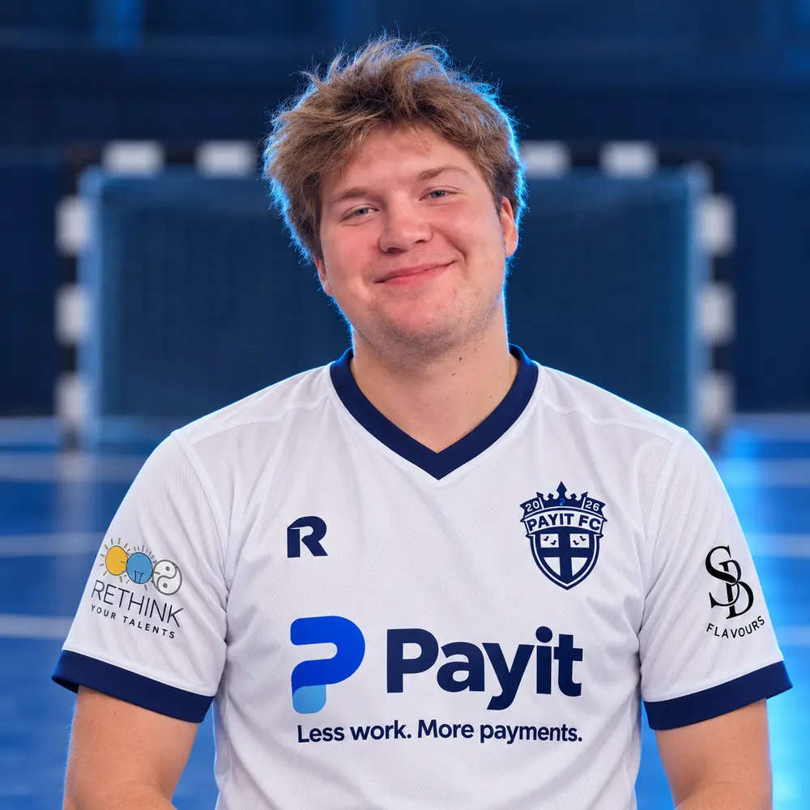
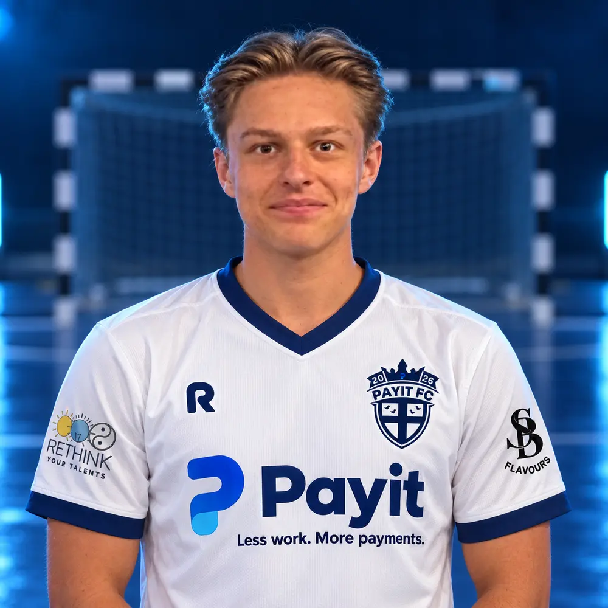
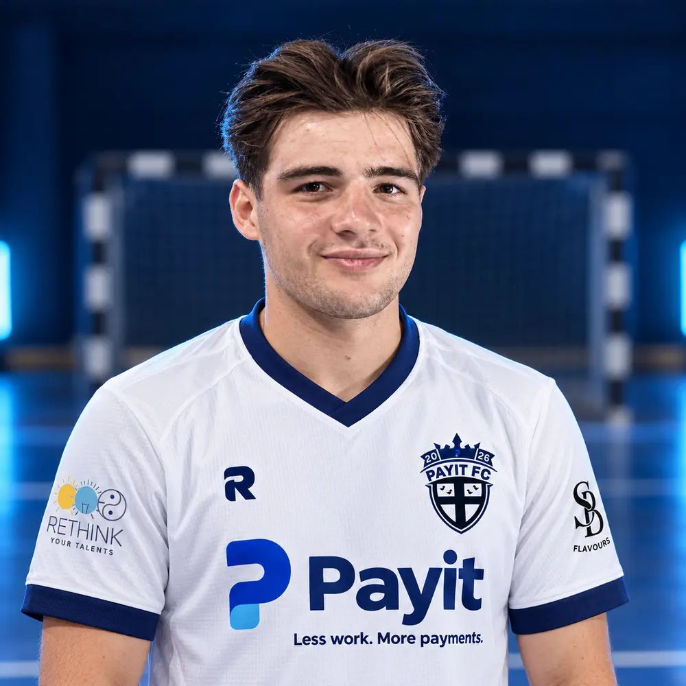
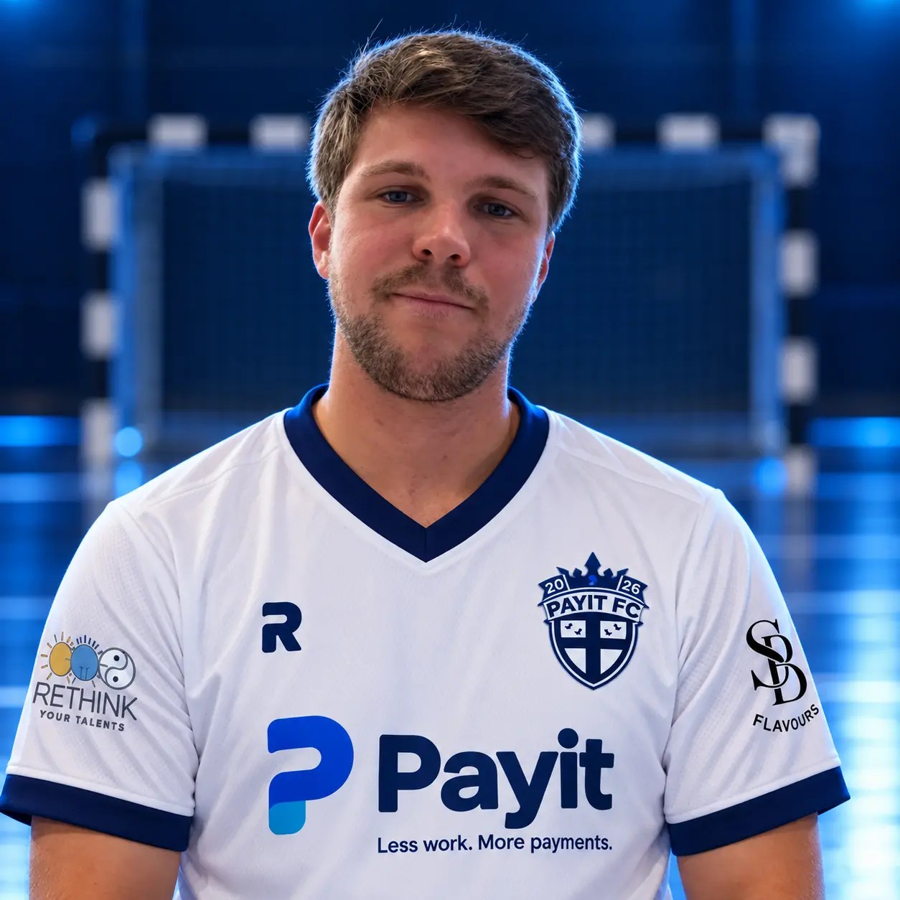
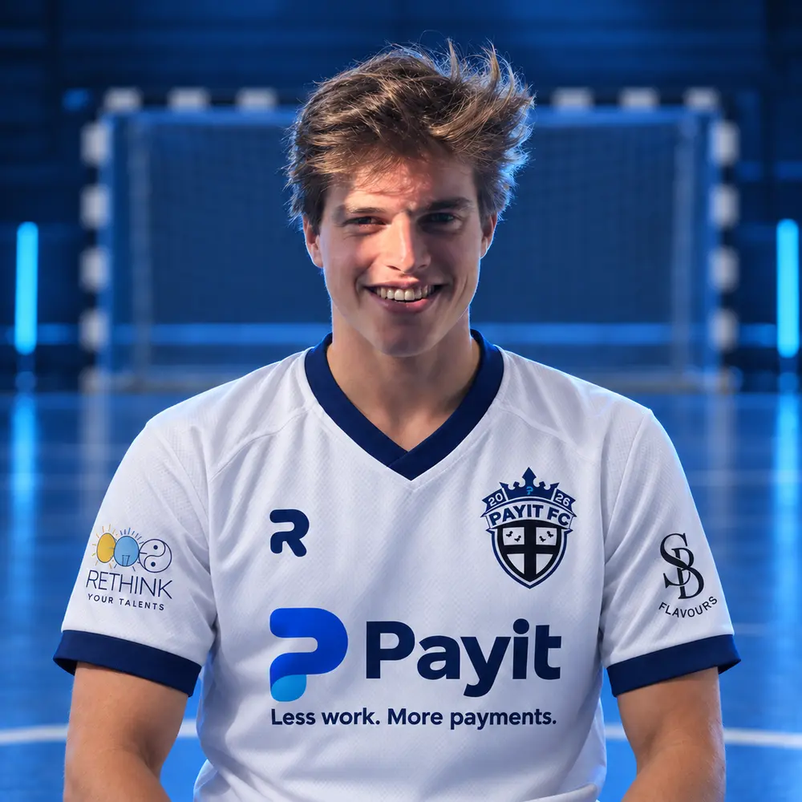
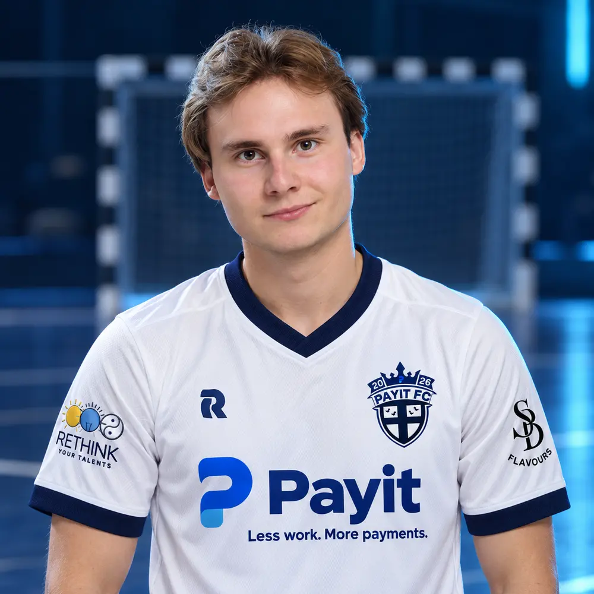
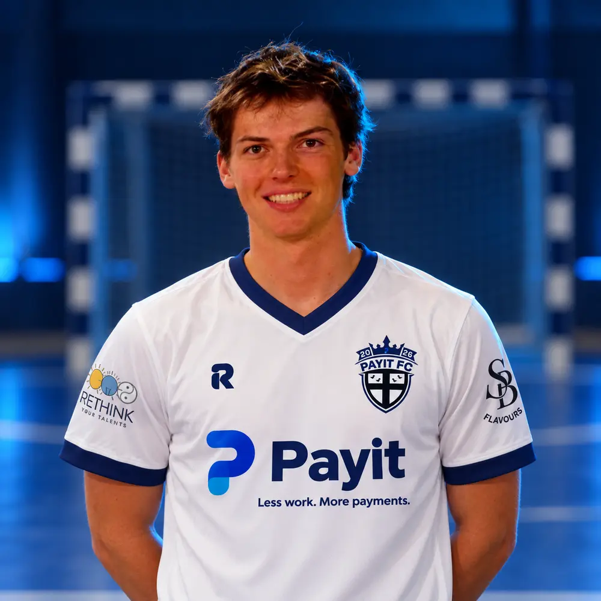
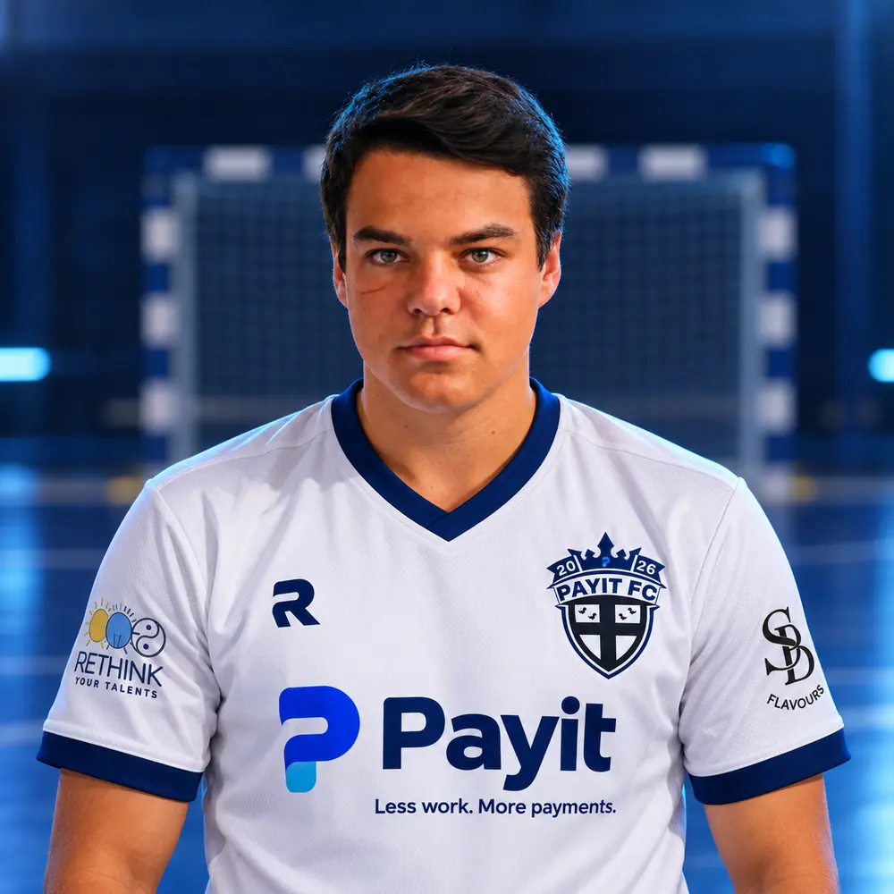
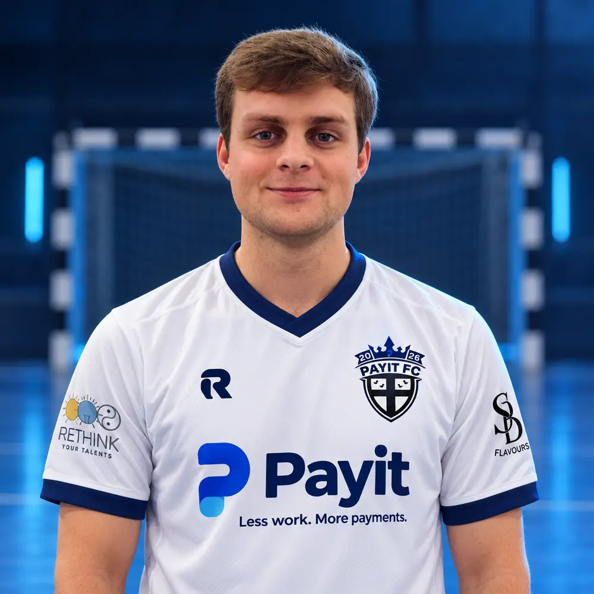
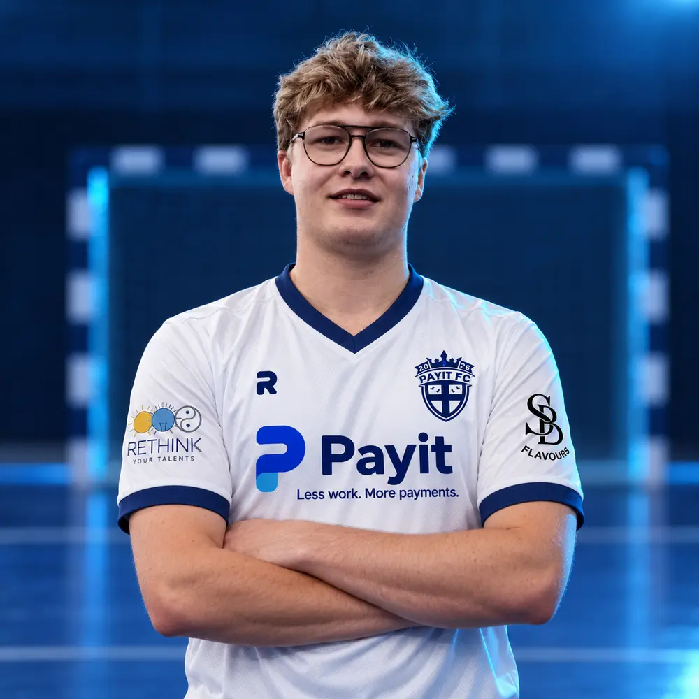

Matchverslag · 29 september 2026
Zestien keer raak, nul keer gevist
Tegen De Kasjotters bleef het net aan onze kant de hele avond ongemoeid. Aan de overkant iets minder: 16–0.
Lees meerEst. 2026 · Izegem
Talent wisselvallig. Sfeer gegarandeerd.

Seizoen 2026/27
“Zestien gemaakt, niets weggegeven. Meer analyse zou alleen maar risico's opleveren.”
 Payit Player of the MatchRafael Verhamme
Verslag
Payit Player of the MatchRafael Verhamme
Verslag
Klassement Competitie
Volledig klassement| # | Ploeg | M | W | G | V | DS | Ptn |
|---|---|---|---|---|---|---|---|
| 1 | Panna FC | 5 | 4 | 0 | 1 | +9 | 12 |
| 2 | T'Bloemgat | 4 | 4 | 0 | 0 | +20 | 12 |
| 3 | FC Ariba | 4 | 4 | 0 | 0 | +59 | 11 |
| 4 | Orthopedie Van Parys | 5 | 3 | 0 | 2 | +27 | 9 |
| 5 | PAYIT FC | 3 | 3 | 0 | 0 | +34 | 9 |
| 6 | MVC Deportivo VDM | 3 | 3 | 0 | 0 | +22 | 9 |
| 7 | Plectrum - Maison Noire | 4 | 3 | 0 | 1 | +12 | 9 |
| 8 | MVC De Lagaar - Gworks | 4 | 2 | 0 | 2 | -1 | 6 |
Bron: MVBI · bijgewerkt 08/10/2026 · M matchen · W winst · G gelijk · V verlies · DV/DT doelpunten voor/tegen · DS doelsaldo
Na 3 matchen

Topschutter
9goals
Goal race
Payit Player of the Match
Arthur De FauwQ-Team · 16–1
1× POTM
 Louis AzouDriemo · 7–4
1× POTM
Rafael VerhammeDe Kasjotters · 16–0
1× POTM
Louis AzouDriemo · 7–4
1× POTM
Rafael VerhammeDe Kasjotters · 16–0
1× POTM
Matchverslagen
Matchverslag · 29 september 2026
Tegen De Kasjotters bleef het net aan onze kant de hele avond ongemoeid. Aan de overkant iets minder: 16–0.
Lees meerMatchverslag · 22 september 2026
Tegen Driemo moesten we er een pak meer voor doen dan op speeldag 1. De drie punten bleven wel in Izegem: 7–4.
Lees meerMatchverslag · 15 september 2026
De allereerste officiële match van PAYIT FC, en meteen zestien goals. Bescheiden blijven doen we morgen wel.
Lees meer13 vrienden · 1 ploeg
Louis Azou
Jonas Boucquet
Artuur CallebertArthur De Fauw
Achiel Denijs
Milan Deryckere
Jelle Descheemaecker
Pierre Dubuisson
Ilias Godefroo
Niel Lammertyn
Mathias Vancompernolle
Jean-Louis VandewalleRafael VerhammeZij spelen mee
Geen bijzaak onderaan de pagina. Deze bedrijven maken het seizoen mee mogelijk en verdienen een plek in de basis.

Main partner
Maakt inschrijvingen, ticketing en online betalingen voor organisaties een pak eenvoudiger. Onze naamgever en trouwe supporter.
Bezoek partner
Partner 02
Een gastvrije brasserie in Kachtem met dagverse gerechten, tearoom en veel sfeer.
Bezoek partner
Partner 03
Advies en begeleiding rond vermogensplanning, met een persoonlijke aanpak.
Bezoek partner
Partner 04
Coaching voor loopbaan, persoonlijke ontwikkeling en sterkere teams.
Bezoek partner
Partner 05
Natuurlijke smaakmakers van Sandra Bekkari: kruiden, olijfolie, granola en meer.
Bezoek partnerBuiten de lijnen
Matchdays, uitslagen, Payit Player of the Match en alles wat eigenlijk niet op een officiële clubwebsite thuishoort.
@payit.football